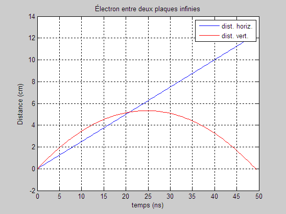

GraphEx3
Contents
clear; close all; clc; m = 9.1e-31; % kg q = -1.6e-19; % C E = 1.0e3; % N/C v0 = 5.0e6; % m/s v_x0 = v0*cosd(60); v_y0 = v0*sind(60); a_x = 0; a_y = q*E/m; % m/s²
Générer un vecteur temps, par exemple de 0 à 50 ns environ (50e-9).
for i = 1:100 t(i) = (i-1)*50.0e-9/100; s_x(i) = 0 + v_x0*t(i); s_y(i) = 0 + v_y0*t(i) + 0.5*a_y*t(i)^2; % Les calculs sont effectués en m et s. % Les unités du graphiques sont modifiées % selon les spécifications du problème. s_x(i) = s_x(i)*100; % cm s_y(i) = s_y(i)*100; % cm t(i) = t(i)/1.0e-9; end
Graphique
Tracer s_x en bleu et s_y en rouge.
plot(t,s_x,'b-', t,s_y,'r-'); % Compléter le graphique. grid on; xlabel('temps (ns)'); ylabel('Distance (cm)'); title('Électron entre deux plaques infinies'); legend('dist. horiz.', 'dist. vert.');

Recherche de la hauteur maximale
HauteurMaxEnCm = s_y(1); for i = 1:length(s_y) if(HauteurMaxEnCm<s_y(i)) HauteurMaxEnCm = s_y(i); end end HauteurMaxEnCm
HauteurMaxEnCm =
5.3319